Project walkthrough
Tourist Data Management System
Explore the administration tools and user-facing features of the AI-powered tourist accommodation demand platform.
01 / Administration
Admin side Features (Municipal Tourism Office)
The data shown here are public data and do not contain sensitive private information.
.png)
.png)
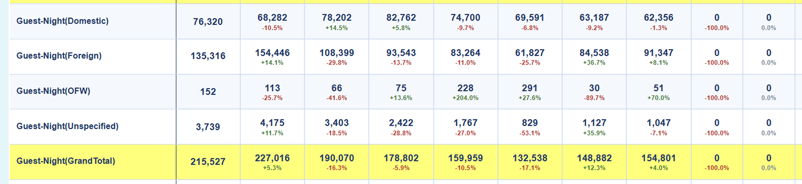
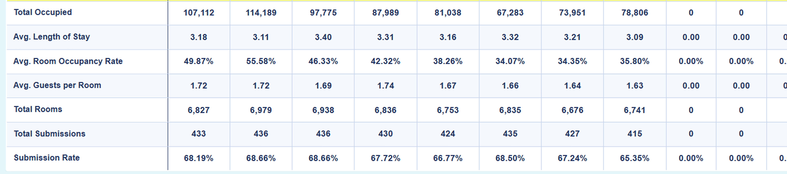
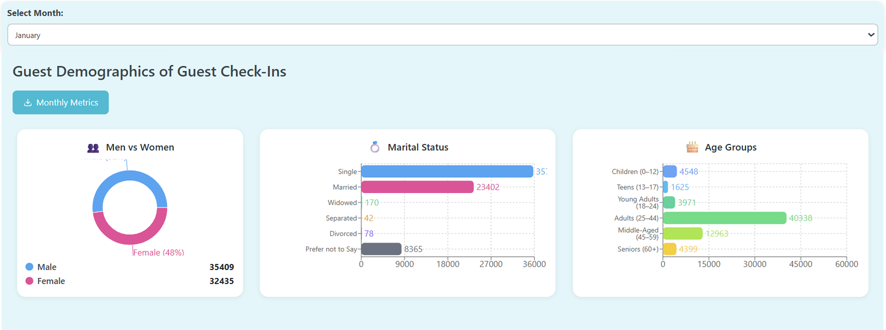
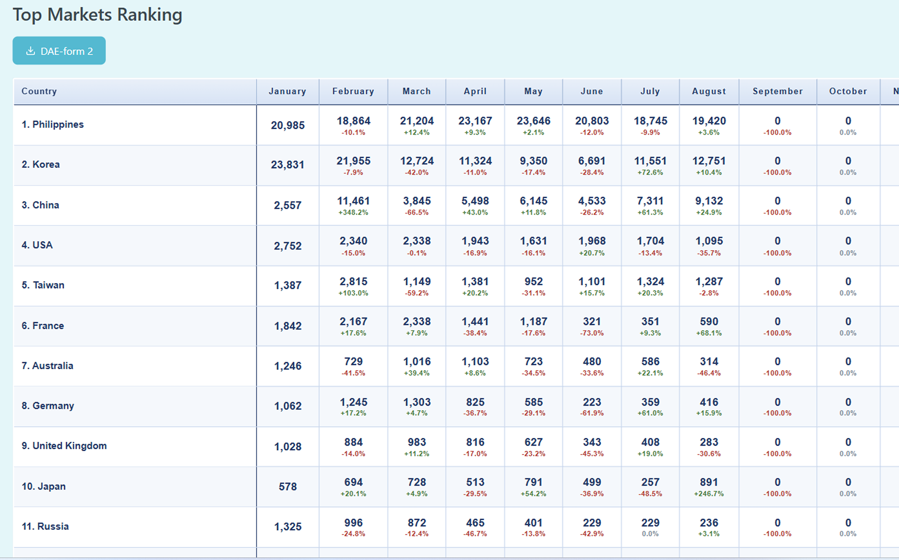
02 / User experience
User side Features (Resorts)
This is a dummy account for demonstration, visual reference, and presentation purposes only.
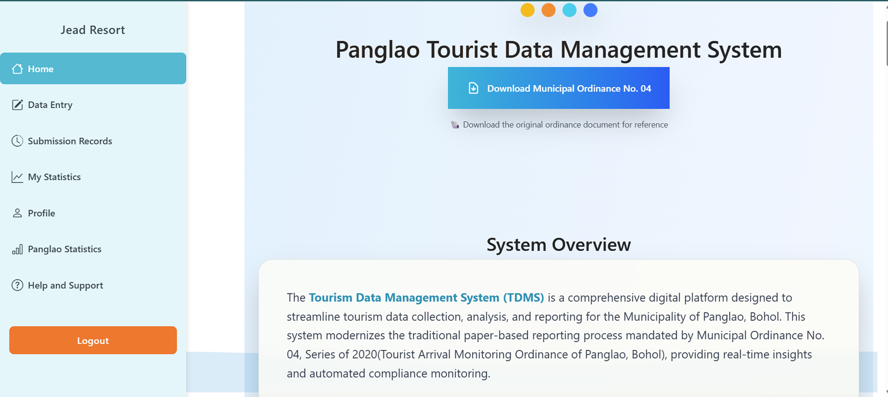
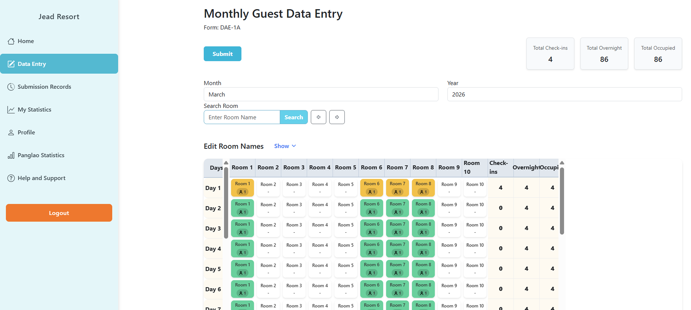
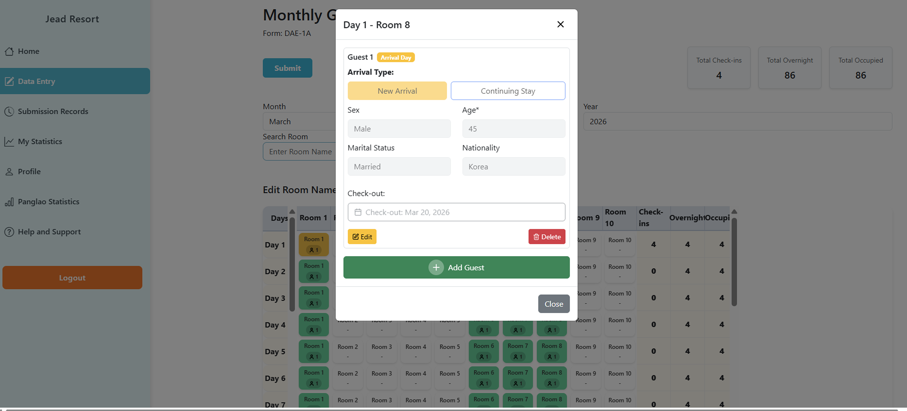
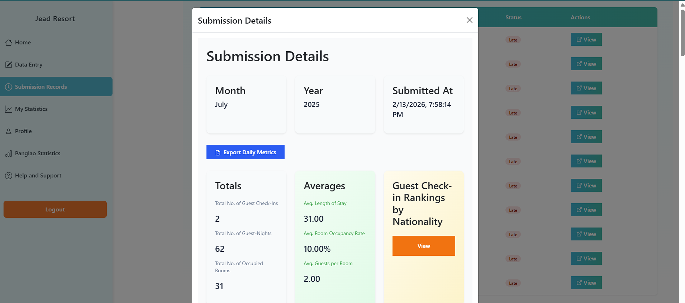
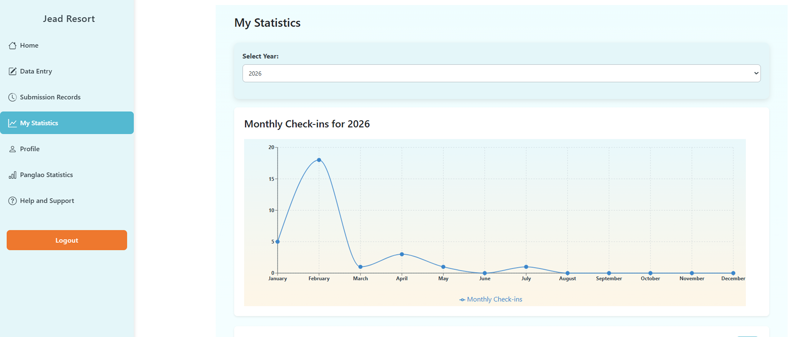
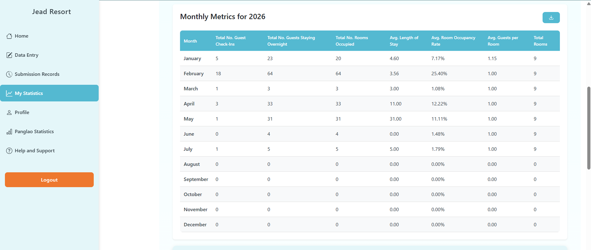
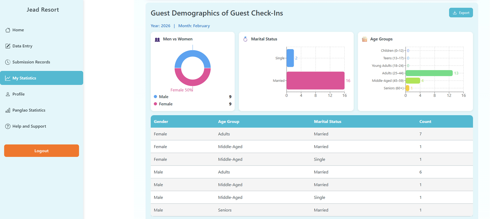
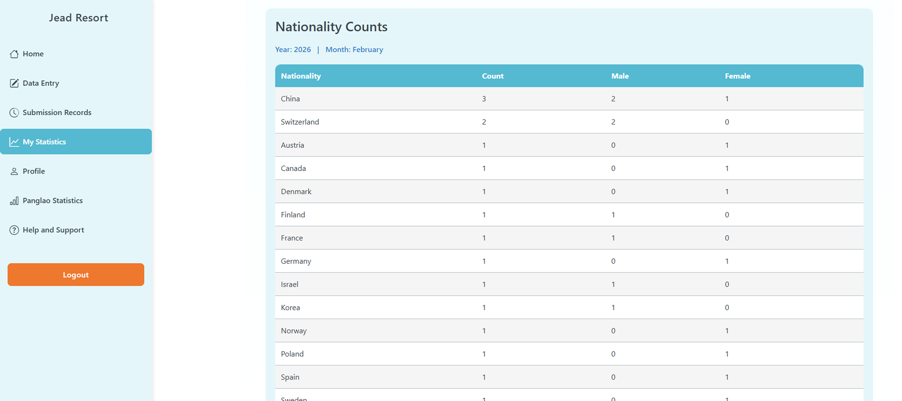
03 / Role & impact
My Role in the Integrated Tourist Data Management System
- Led the end-to-end development of the Panglao Integrated Tourist Data Management System (ITDMS), a university-developed platform formally adopted by LGU of Panglao, Bohol through a MOA with Bohol Island State University (BISU), enabling 500+ registered resorts to submit monthly tourist arrival reports digitally.
- Automated data collection, consolidation, validation, and reporting, reducing processing time from 10–15 days to minutes, a 95% reduction in processing time.
- Independently designed, developed, deployed, and maintained the full-stack application using PostgreSQL, Express.js, React, and Node.js (PERN).
- Managed the production environment on DigitalOcean, including PostgreSQL, Linux, NginX, PM2, domain configuration, deployments, backups, and system maintenance.
- Analyzed tourism performance and presented monthly statistics, dashboards, and trend analyses to the Panglao Municipal Tourism Council, Mayor's Office, DOT, private-sector stakeholders, and other partners, supporting tourism planning and decision-making.
- Co-developed and evaluated XGBoost, LSTM, Random Forest, and Prophet forecasting models for tourist accommodation demand, while providing technical training and support to accommodation establishments and LGU personnel.
04 / Project details
Integrated Tourist Data Management System
In today's era of digital transformation and artificial intelligence, many local government offices still rely on manual systems that slow down service delivery.
Panglao, Bohol, a leading tourist destination, manages its tourist accommodation data using paper forms and spreadsheets. This creates delays, inefficiencies, human error, and difficulty complying with the monthly reporting required by Municipal Ordinance No. 04, Series of 2020, also known as the “Tourist Arrival Monitoring Ordinance of Panglao, Bohol.”
The Integrated Tourist Data Management System (ITDMS) is a web-based platform that automates data collection, consolidation, and reporting. What once took over 10 days of manual work by tourism personnel can now be done in minutes, resulting in a 92.6% improvement in processing time.
The system features two main roles:
- Establishments submit guest data.
- The Municipal Tourism Office manages submissions and generates reports.
To support future planning, the system includes an AI-powered forecasting feature that analyzes past tourist data and predicts accommodation demand. The most accurate model achieved a 94.79% forecast accuracy.
The ITDMS not only accelerates data handling but also enables smarter decisions, offering a model for other municipalities to modernize tourism data management in the Philippines.
05 / System process
System process flowchart
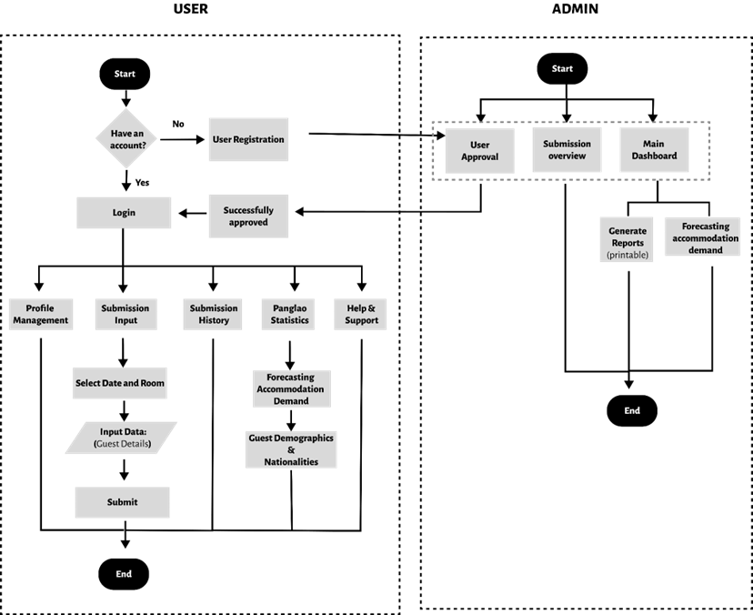
06 / Technical foundation
Summary of architecture used
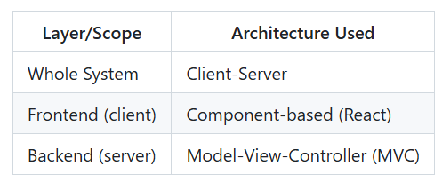
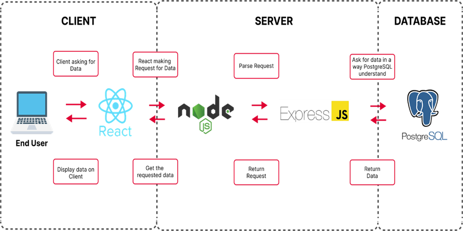
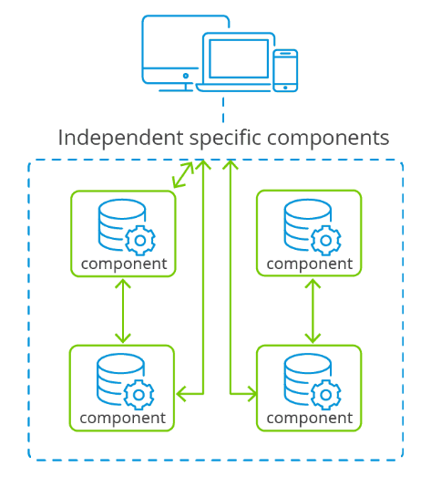
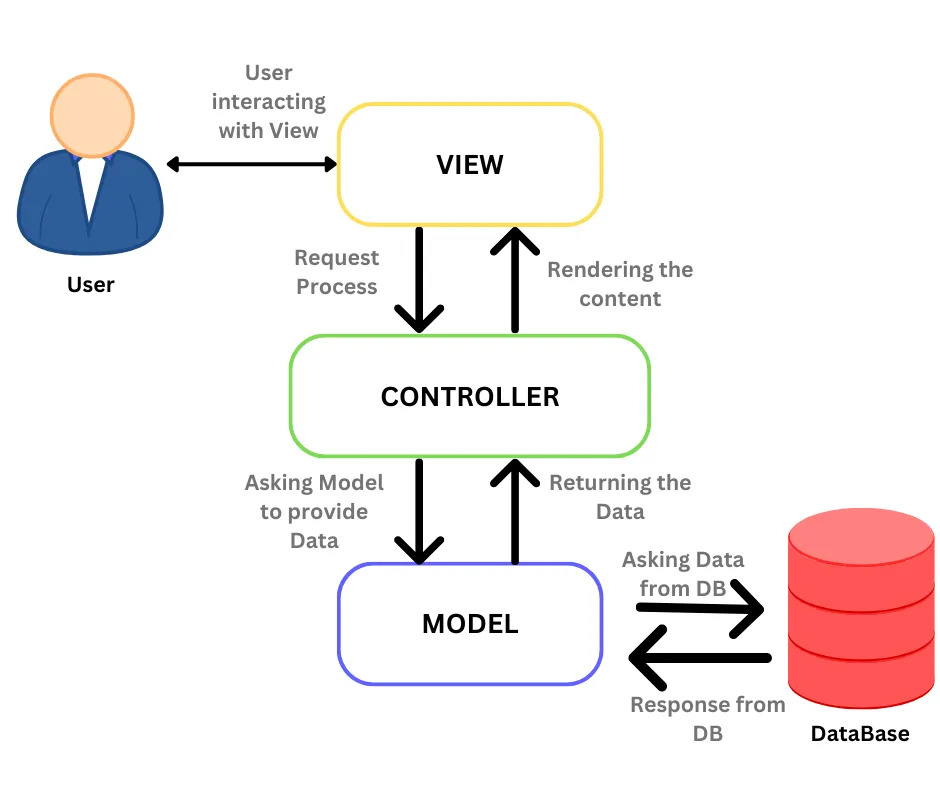
07 / Predictive analytics
Forecasting model
The Forecasting Model predicts future accommodation demand based on historical data. The system used multiple machine learning models, including XGBoost, Random Forest, Long Short-Term Memory, and Facebook Prophet, combined with engineered features to capture trends, seasonality, and external influences such as holidays.
Learn more about the factors that can affect the prediction
Machine learning evaluation results
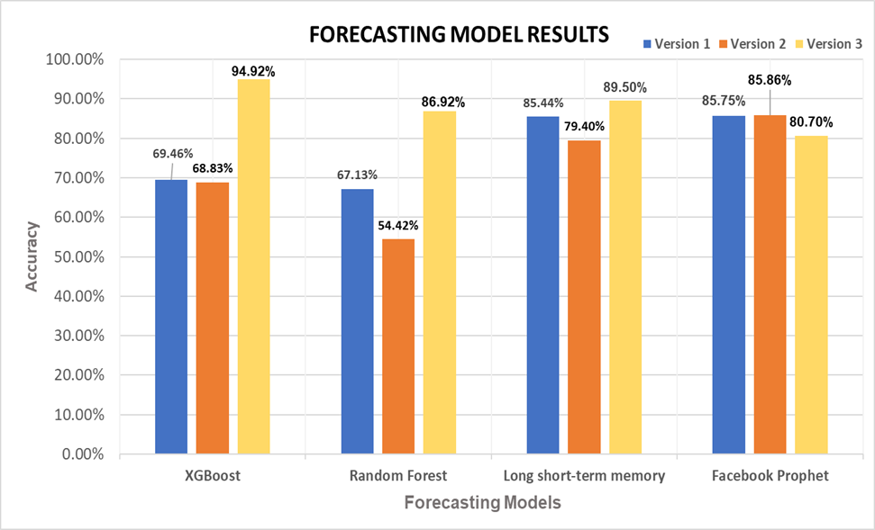
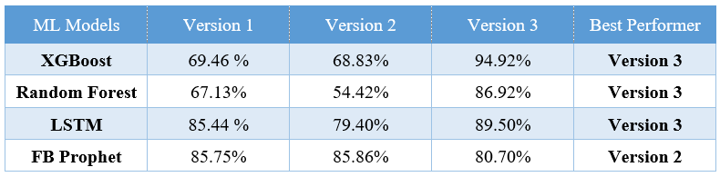
Graph comparison of the best performing version of each machine learning model
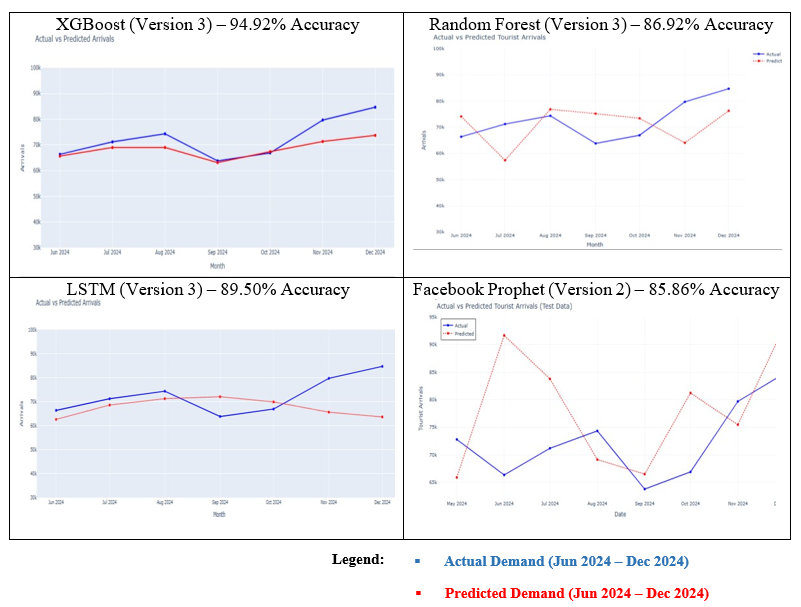
Based on the results from XGBoost, Random Forest, Long Short-Term Memory, and Facebook Prophet across three feature versions, XGBoost Version 3 demonstrated the highest accuracy at 94.92%. Compared to the other models, XGBoost Version 3 was the most reliable for forecasting tourist accommodation demand because it consistently captured the upward and downward trends of actual tourist arrivals.